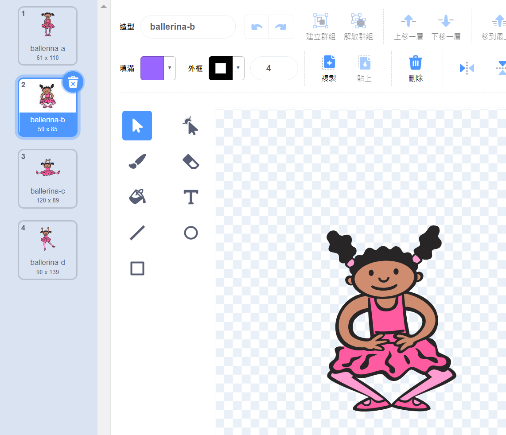

|
|
|---|
 造型（背景）清單窗格
造型（背景）清單窗格
「造型」窗格（在舞臺部分是「背景」窗格，二者相似，在此敘述以「造型」窗格為例）是Scratch內建的圖像編輯器的一部分。此窗格包含目前選定角色的所有造型。它是可滾動的，並且以藍色來突出顯示當前在圖像編輯器畫布上所顯示的造型。

如果沒有這個窗格，就沒有辦法看到角色的所有造型，而造型在此的排序值，就是它的「造型編號」，可以透過積木的編程來讓造型顯示。
造型會垂直放置在「造型」窗格中。如果造型太多而無法同時顯示，可以向下或向上捲動。窗格中由每個造型的縮圖以及一些屬性組成。造型縮圖下方是造型名稱和解析度（尺寸），縮圖的左上角有一個小數字，代表造型的造型編號。
如果選擇了造型，它周圍會有一個藍色框。然後，造型也會顯示在圖像編輯器的畫布中，可進行編輯。藍色框的右上角有一個小「x」，點擊時，當前選中的造型將被刪除。任何被意外刪除的造型，都可以透過「編輯」＞「復原造型」來恢復。（只能復原最近一個被刪除的造型，且復原後會排在造型的最後一個）。
造型窗格的最下面是一個可以新增造型的選單，將滑鼠懸停在藍貓圖示上即可顯示。有四個創建新造型的選項（從上到下的順序）：上傳、驚喜、繪製和圖庫選擇。
此外，可以用滑鼠按住縮圖，然後向上或向下拖曳移動來更改造型的排序，也可以將造型拖曳複製到其他角色裡。在縮圖上按右鍵時，可以複製造型、匯出造型和刪除造型。